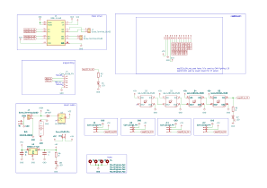

ESP32-CAM Robot v2 — ESPHome firmware
| Type | Robot firmware: drive, video, status LEDs and screen, from a web page |
|---|---|
| Stack | AI-Thinker ESP32-CAM → plugin board v3 → robot board v2 |
| Motors | TB6612FNG on the robot board (J1, J3) |
| Lights | 4 × TX1812 RGB (status), D1 + flash LED (headlight) |
| Screen | 0.96″ SSD1306 OLED on the plugin board |
| Firmware | ESPHome 2026.7.3, Arduino framework, on Linux or Windows |
| Web page | Port 80: drive buttons, sliders, logs |
| Video | MJPEG on port 8080 |
| Configuration | esp32_cam_robot.yaml |
| Helper | launch.sh (menu for kids) |
| KiCad files | esp32_cam_robot_v2, esp32_cam_plugin_v3 |
| Status | compiles, not yet run on the robot |
This is the robot firmware that follows the plugin board validation. The test bench proved each part on its own; this file makes them work together as a robot you drive from a phone.
Overview
Three boards stack up. The ESP32-CAM plugs into the plugin board (v3), whose 12-pin header J4 plugs into J2 of the robot board (v2). The robot board brings the motor driver, four RGB LEDs, the batteries and the power switch; the plugin board brings the OLED and LED D1. The plugin's two L9110 drivers (U1, U3) are not fitted on this build: the TB6612 is the only motor driver.
The plugin article calls its board “rev v4”: that is the same circuit migrated to KiCad 9. The board actually made is v3 — same nets, same GPIOs.

The firmware is one ESPHome file. Once flashed, the robot joins the Wi-Fi network, shows its address on the OLED, and serves a page with drive buttons, a speed slider and the live log. The video is on port 8080.
The stack and its pinout
Every pin below comes from the netlist of both boards. The plugin board passes the ESP32 pins straight through to J2, so both boards see the same signals.
| Part | Board | Signal | GPIO | Note |
|---|---|---|---|---|
| Motor A → J1 (silk “M2”) | robot | AI1 | GPIO13 | TB6612 pin 14 |
| AI2 | GPIO2 | strapping pin | ||
| Motor B → J3 (silk “M1”) | BI1 | GPIO15 | strapping pin | |
| BI2 | GPIO14 | TB6612 pin 11 | ||
| RGB D5→D4→D3→D2 | robot | DIN | GPIO12 | strapping pin; D7 hangs on it too |
| OLED | plugin | SDA | GPIO3 | UART0 — serial logging off |
| SCL | GPIO1 | UART0 | ||
| LED D1 + flash LED | plugin | DIN | GPIO4 | used as the headlight |
| Status LED D1 (robot) | robot | — | GPIO16 | not used: PSRAM chip select |
| BOOT button SW1, jumper J6 | robot | IO0 | GPIO0 | not used: camera clock |
| Servo headers S1–S4 | robot | signal | 15, 13, 2, 14 | same pins as the motors |
On the robot board the TB6612's STBY, PWMA and PWMB are tied to 3V3. The driver is always enabled and the speed is set by PWM on the IN pins — exactly how the L9110 works, so ESPHome's hbridge fan drives it unchanged. The plugin's L9110 footprints stay empty, so its motor terminals J1/J3/J5 and its motor-supply link J6/JP2 are unused.
Power: the battery (or J7/J8) goes through D6 and the switch to VCC, which feeds the motors (VM) and the AMS1117-5.0. USB-C feeds +5 V directly. On USB alone the motors only turn if J13 bridges +5 V to VCC.
KiCad and production files
The full KiCad 9 project of the robot board v2 is kept next to this article, in files/esp32_cam_robot_v2:
- esp32_cam_robot.kicad_sch — the schematic, and a PDF of it.
- esp32_cam_robot.kicad_pcb — the board, 110 × 110 mm.
- esp32_cam_robot.kicad_pro and
.kicad_prl— the project. Put the files in one folder and open the.kicad_pro. - production/ — what was sent to the fab: Gerber zip, BOM, pick-and-place positions, designators, IPC netlist.
The plugin board v3 that sits on top is kept the same way, in files/esp32_cam_plugin_v3: schematic, board, project and production files. Its pictures are in the plugin article.




launch.sh: a menu for kids
launch.sh wraps every step in a coloured menu. Before running anything it prints the exact command after a yellow ▶, so children see what the computer does instead of a black box. Put it next to esp32_cam_robot.yaml, then:
chmod +x launch.sh
./launch.sh # the menu
./launch.sh compile # or one step directly| # | Option | What it does |
|---|---|---|
| 1 | 🔍 Check install | Python, the venv, the exact ESPHome version, the dialout group, Wi-Fi settings, a USB board plugged in |
| 2 | 📦 Install | Creates ~/esphome-venv, installs esphome==2026.7.3, offers to add you to dialout |
| 3 | 📶 Set Wi-Fi | Asks for the network and the password (hidden) and writes secrets.yaml |
| 4 | 🧪 Check config | esphome config; shows only the error part if there is one |
| 5 | 🛠 Compile | esphome compile, then checks that a firmware file really exists |
| 6 | 🔌 Flash over USB | Checklist (motor power off, J6 jumper, adapter on J5), finds the port, uploads |
| 7 | 📡 Update over Wi-Fi | Uploads to esp32-cam-robot.local or the address on the OLED |
| 8 | 📜 Watch logs | Live logs over Wi-Fi |
| 9 | 🌐 Open robot page | Opens the control page and the video in the browser |
| 10 | 🧹 Clean | Deletes the build files |
Set ROBOT_IP=192.168.1.42 in front of the command to skip typing the address. The same script runs on Linux and in Git Bash on Windows; there, USB ports appear as COM3, COM4… and esphome is started without MSYSTEM (see Traps).
Install & flash by hand
- Install ESPHome in its own virtual environment, with the version pinned:
python3 -m venv ~/esphome-venv source ~/esphome-venv/bin/activate pip install esphome==2026.7.3 sudo usermod -aG dialout $USER # once, then log out and back in - Download esp32_cam_robot.yaml. Next to it, create
secrets.yamlfor a 2.4 GHz network:wifi_ssid: "YourWiFi" wifi_password: "YourPassword" - Check and compile:
esphome config esp32_cam_robot.yaml esphome compile esp32_cam_robot.yaml - First flash over USB: motor power off, jumper on J6 (IO0 to GND), USB-serial adapter on J5 (
gnd,ftx,frx), USB-C for power. Then:
Remove the J6 jumper and press reset. The OLED shows the address about 20 seconds later.esphome upload esp32_cam_robot.yaml --device /dev/ttyUSB0 - Later updates go over Wi-Fi:
esphome upload esp32_cam_robot.yaml --device 192.168.1.42
If the robot does not join the network, look for the access point esp32-cam-robot fallback: wrong password, or a 5 GHz-only network.
Driving
Open http://<IP>. The page has five buttons and three sliders:
| Control | Effect |
|---|---|
| Forward / Back | Both wheels the same way |
| Left / Right | Spin in place, wheels in opposite directions |
| Stop | Brakes at once |
| Speed | 20–100 %, scales everything, remembered across reboots |
| Drive timeout | 0.3–5 s, default 1 s: how long one command lasts |
| Drive X / Drive Y | −100…100: joystick input for a custom page or Home Assistant |
X and Y are mixed into the two wheels as left = Y + X, right = Y − X, then scaled by Speed. A joystick page or a script only needs two REST calls:
curl -X POST "http://192.168.1.42/number/drive_y/set?value=60"
curl -X POST "http://192.168.1.42/number/drive_x/set?value=-30"
curl -X POST "http://192.168.1.42/button/stop/press"Safety
- Every command expires. With no new command within Drive timeout, the robot stops. A button press therefore drives for one second; press again to keep going. A joystick page resends its values more often than that.
- Losing the link stops the robot. Wi-Fi dropping, or the API client (Home Assistant) disconnecting, stops the motors; the RGB LEDs turn red until the next command.
- Stopping brakes. Both IN pins high is the TB6612's short brake: the robot stops dead instead of rolling.
- Starting ramps. Speed rises 10 % every 40 ms (0 to 100 % in 0.4 s), which softens the current surge that resets the board. Slowing down and reversing are immediate.
- Motors off at boot, whatever they were doing before.
If Forward drives backwards, or Left turns right, change the settings at the top of the file: invert_left / invert_right flip a wheel, left_motor / right_motor swap the sides.
Lights and screen
The robot board's four RGB LEDs show the state while Status LEDs auto is on:
| Colour | Meaning |
|---|---|
| Blue | Connecting to Wi-Fi |
| Green | Ready |
| Amber | Driving |
| Red | Stopped because the link was lost |
Switch Status LEDs auto off to set the RGB LEDs yourself. The Headlight is the plugin's LED D1; the module's white flash LED shares its data line and lights with it.
The OLED alternates two pages every 4 seconds: network (Wi-Fi signal, IP address, name, video port) and drive (left and right wheel in %, state, speed, uptime). Set oled_model and oled_address at the top of the file as for the plugin board.
The camera
The video is at http://<IP>:8080, one viewer at a time. It runs at 320×240 and up to 15 frames per second: a small picture arrives sooner, which matters more when driving than sharpness does. Change cam_resolution and cam_fps at the top of the file. Cam vertical flip and Cam horizontal mirror fix the image for the way the module is mounted.
Traps on this board
The battery holder is wired to ground
On the PCB, BH1 pad 1 (the “+” side, under the + marks) and pad 2 (“−”) are both on GND. Check with a multimeter before inserting a cell; until then, feed the battery through J7 or J8, which go through D6 and the switch as intended.
Motor B may twitch at power-up
STBY is tied to 3V3, so the TB6612 is enabled from the first microsecond. During the ROM boot GPIO15 is pulled high and GPIO14 toggles, before the firmware can set them. ESPHome sets all four motor pins low as early as it can; a short jerk remains possible, and only a hardware change on STBY would remove it.
The BOOT button cannot be an emergency stop
SW1 and J6 pull GPIO0 low — useful to flash. Once running, GPIO0 is the camera's 20 MHz clock: pressing SW1 shorts it to ground. Do not press it while the robot runs.
GPIO16 belongs to the PSRAM
The robot board puts a status LED (D1, via R3) on GPIO16, and a note on the schematic plans an IR sensor there. On the AI-Thinker module, GPIO16 is the PSRAM chip select; driving it breaks the camera buffers. The firmware leaves it alone.
GPIO12 must be low at boot
GPIO12 sets the flash voltage at reset: high means 1.8 V and the module does not start. The RGB chain's data input and D7 (through R5 to ground) keep it low, which is fine — do not add a pull-up there.
The FTDI header shares the OLED bus
J5 carries UART0, which is also the OLED's I²C bus. Plug the adapter in to flash, then unplug it: left connected, it disturbs the screen.
object_id is gone in ESPHome 2026
Setting a number's address with object_id: drive_x is rejected as an invalid option. The address comes from the name: Drive X gives /number/drive_x.
“Successfully compiled” on Windows
From Git Bash (MSYS2), ESPHome 2026 prints MSys/Mingw is no longer supported, builds nothing, then still says Successfully compiled program. The cause is the MSYSTEM variable that Git Bash sets: ESP-IDF sees it and skips the build. From PowerShell or cmd, where it is not set, the same command builds normally. Git Bash even puts MSYSTEM back into every program it starts, so env -u MSYSTEM does not help; launch.sh starts esphome through a tiny Python step that deletes it, and checks for the firmware file after compiling.
Troubleshooting
The robot drives for one second, then stops
That is the drive timeout doing its job with the buttons. Press again, or raise Drive timeout. A joystick client must resend faster than the timeout.
The motors do not turn on USB
The TB6612's motor supply is VCC, the battery side. On USB-C alone, bridge J13 (+5 V to VCC), or connect a battery on J7/J8.
Uptime drops to 0 when the robot starts
A brownout reset. Lower Speed, lower ramp_step for a gentler start, and add 220–470 µF plus 10 µF ceramic on +5 V near the ESP32-CAM.
The LEDs stay red
The link was lost while driving. Any new drive command clears it.
No video on port 8080
Only one viewer at a time: close other tabs with the stream. See the plugin board troubleshooting for camera and power faults.
Related articles: ESP32-CAM plugin board — ESPHome validation · ESP32-CAM Robot (m2) · ESP32-CAM Robot m1 · ESP32-CAM Robot workshop